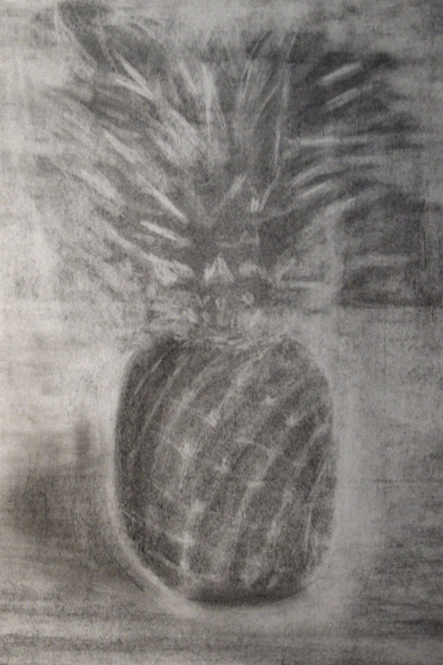
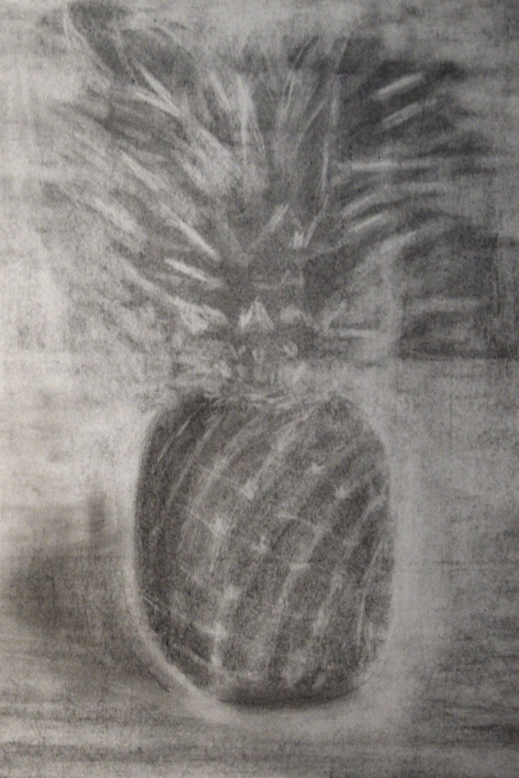
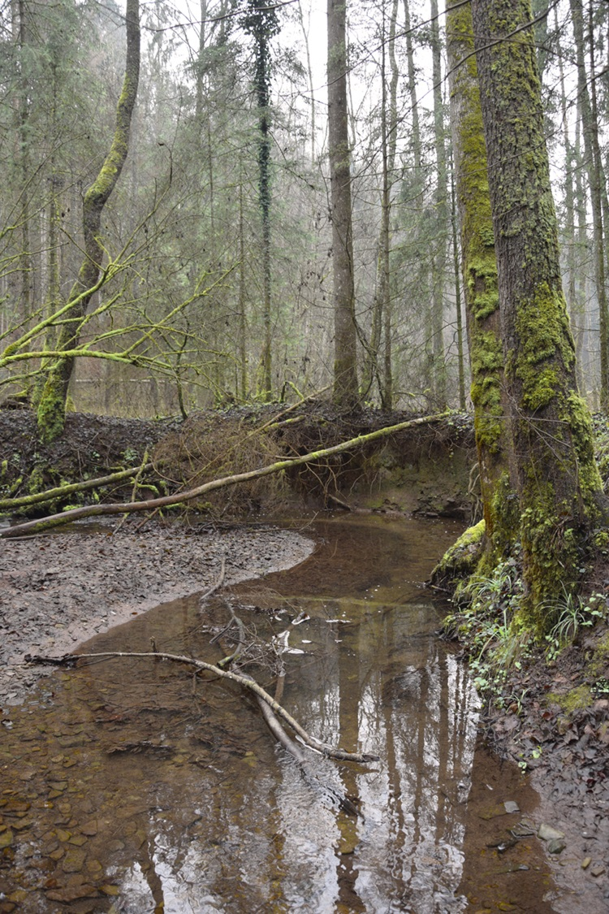
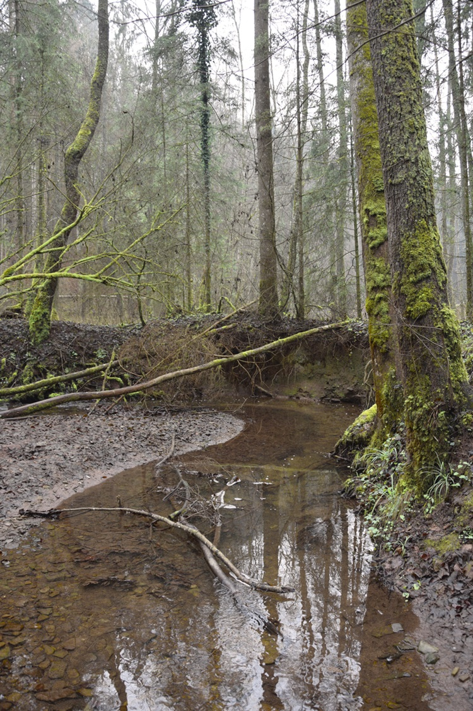
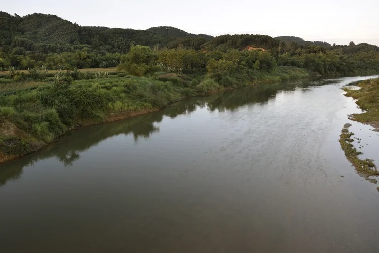
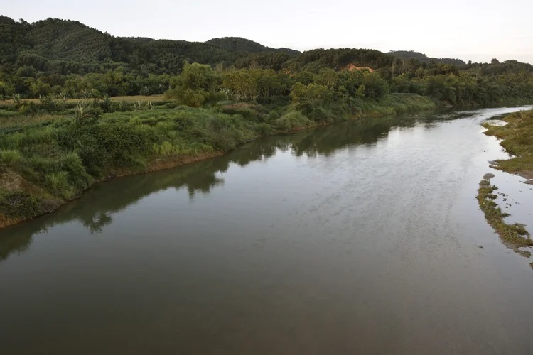

The city council is planning a new quarter on a run-down railroad station site. There are various non-profit institutions housing in old loading halls, which are now forced to move out in order to make room for several new buildings. Suddenly lizards enter the game and endanger the entire undertaking.
Created as part of the “Anti-Stuttgart — A Determinate Negation” IGmA design studio, in which certain urban developments and procedures were examined critically.
The film was being shown at the University of Stuttgart’s architecture faculty’s graduate exhibition and at the CURRENT festival for art and urban space.
Personal data (usually referred to just as „data“ below) will only be processed by us to the extent necessary and for the purpose of providing a functional and user-friendly website, including its contents, and the services offered there. Per Art. 4 No. 1 of Regulation (EU) 2016/679, i.e. the General Data Protection Regulation (hereinafter referred to as the „GDPR“), „processing“ refers to any operation or set of operations such as collection, recording, organization, structuring, storage, adaptation, alteration, retrieval, consultation, use, disclosure by transmission, dissemination, or otherwise making available, alignment, or combination, restriction, erasure, or destruction performed on personal data, whether by automated means or not.
With regard to the data processing to be described in more detail below, users and data subjects have the right to confirmation of whether data concerning them is being processed, information about the data being processed, further information about the nature of the data processing, and copies of the data (cf. also Art. 15 GDPR); to correct or complete incorrect or incomplete data (cf. also Art. 16 GDPR); to the immediate deletion of data concerning them (cf. also Art. 17 DSGVO), or, alternatively, if further processing is necessary as stipulated in Art. 17 Para. 3 GDPR, to restrict said processing per Art. 18 GDPR; to receive copies of the data concerning them and/or provided by them and to have the same transmitted to other providers/controllers (cf. also Art. 20 GDPR); to file complaints with the supervisory authority if they believe that data concerning them is being processed by the controller in breach of data protection provisions (see also Art. 77 GDPR). In addition, the controller is obliged to inform all recipients to whom it discloses data of any such corrections, deletions, or restrictions placed on processing the same per Art. 16, 17 Para. 1, 18 GDPR. However, this obligation does not apply if such notification is impossible or involves a disproportionate effort. Nevertheless, users have a right to information about these recipients.
Likewise, under Art. 21 GDPR, users and data subjects have the right to object to the controller’s future processing of their data pursuant to Art. 6 Para. 1 lit. f) GDPR. In particular, an objection to data processing for the purpose of direct advertising is permissible. Your data processed when using our website will be deleted or blocked as soon as the purpose for its storage ceases to apply, provided the deletion of the same is not in breach of any statutory storage obligations or unless otherwise stipulated below.


 



 



 
